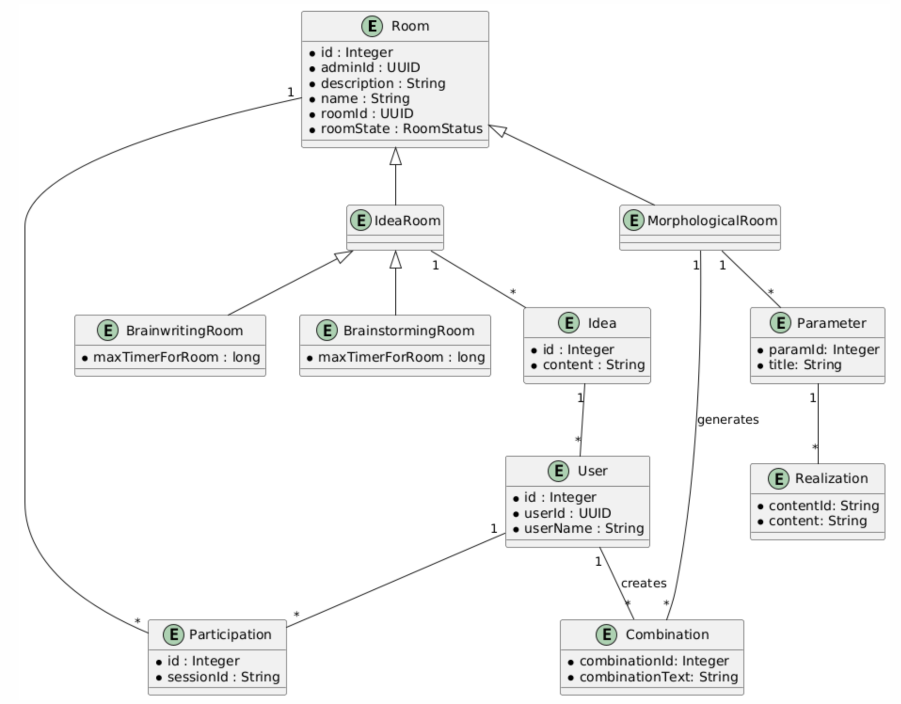

Creative Minds

Projekt der HTL Leonding
Die erste Software Lösung für den Morphologischen Kasten!
Team
Schnalzenberger Isabel
Projekt Leiter & Entwickler
Ursprung Christoph
Frontend Entwickler
Wolfslehner Mattias
Backend Entwickler
Morphologischer Kasten
- Auch Zwicky-Box genannt
- Eine Kreativitätsmethode zur Problemlösung
- Erfunden von Fritz Zwicky in den 1960er Jahren
- Ziel: Mehrdimensionale Probleme in Parameter und Ausprägungen zerlegen
-
- -> Neue Lösungsansätze finden
- Systematische Analyse der Parameter schafft eine objektive Entscheidungsbasis
- Begriff:
- Morphologisch: Verschiedene Formen des Problems untersuchen
- Kasten: Zentrale Morphologische Matrix
- Anforderung: Zentrale Speicherung der Parameter und Ausprägungen für das Team
Ausgangssituation
- Hoher Aufwand bei nachträglicher Digitalisierung analoger Projekte
- Erschwerte Zusammenarbeit durch Home-Office und internationale Strukturen
- Gemeinsame Ideenfindung wird durch genannte Faktoren behindert
Ziel
- Auflösung der genannten Probleme
- Die erste Website zu programmieren die eine Zwicky-Box anbietet
Architektur


ERD
Live Demo